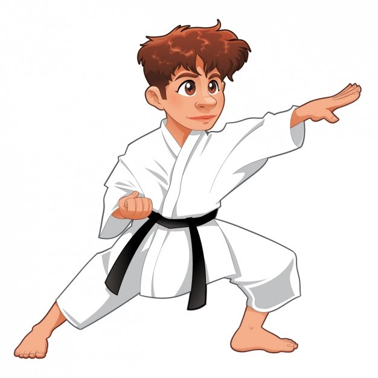

 Origen del karate se origina durante el siglo XVI en las islas Ryukyu en Japón como método de defensa desarmada procedente directamente de la técnica del Okinawa-te, además este método de auto-defensa se ha visto muy influenciado por el arte marcial chino del Kempo. Ubicación geográfica del origen del Karate Okinawa es la mayor de las islas del archipiélago de las Ryukyu situadas al sur del Japón y su capital es Naha. Se conoce que a ella llegaron monjes chinos los cuales influenciaron e introdujeron el Kempo llegando así a las islas de Ryukyu. Dato curioso: Recibe el nombre de To-De o mano de China ( el Kempo) para diferenciarlo del arte propio de las islas se paso a llamar Okinawa-Te.